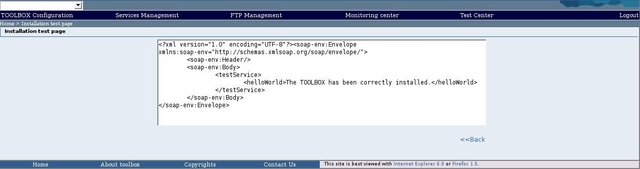

A "testService" service is already present in the TOOLBOX. This service is a "dummy" service. It can be used to check if the has been correctly installed and if a SOAP client can correctly access it.
To perform the test you have to click on the "TOOLBOX installation test " link on the quick link section of the TOOLBOX main page.
If the TOOLBOX is correctly installed you should receive a successful SOAP message
